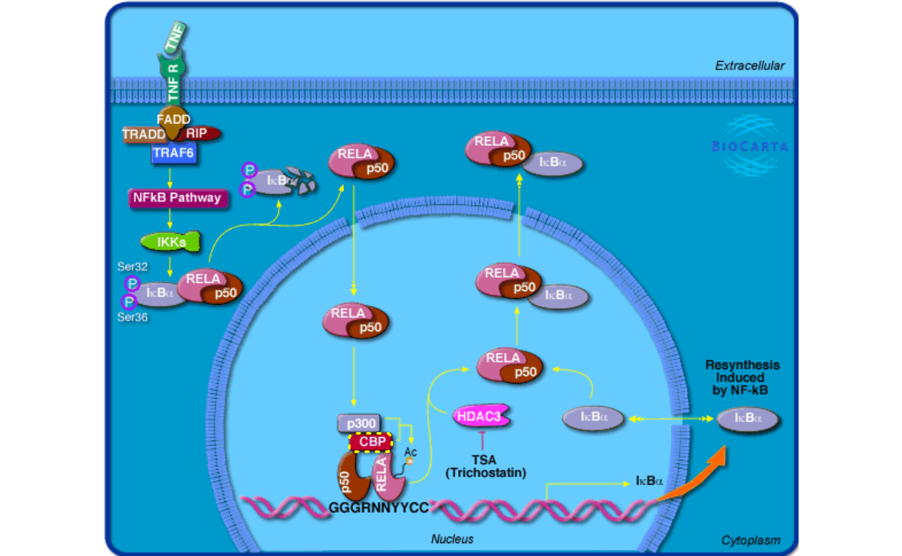
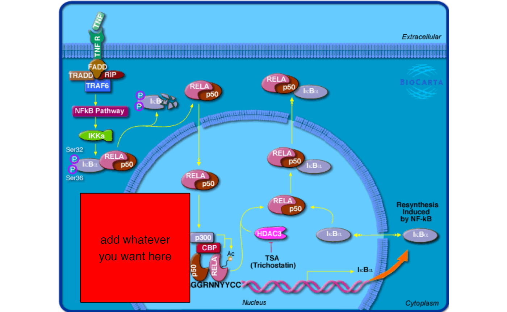

vignettes/topic1_05_BioCarta.Rmd
topic1_05_BioCarta.RmdBioCarta is a valuable source of biological pathways which not only provides well manually curated pathways, but also remarkable and intuitive pathway images.
The BioCartaImage is mainly for customizing BioCarta pathway images, but of source it contains gene sets for BioCarta pathways.
library(BioCartaImage)
head(PATHWAY2ENTREZ)## PATHWAY ENTREZ
## 1 h_RELAPathway 5970
## 2 h_RELAPathway 4790
## 3 h_RELAPathway 8772
## 4 h_RELAPathway 8737
## 5 h_RELAPathway 8717
## 6 h_RELAPathway 7189The full name of pathways:
## h_RELAPathway
## "Acetylation and Deacetylation of RelA in The Nucleus"
## h_no1Pathway
## "Actions of Nitric Oxide in the Heart"
## h_gsPathway
## "Activation of cAMP-dependent protein kinase, PKA"
## h_CSKPathway
## "Activation of Csk by cAMP-dependent Protein Kinase Inhibits Signaling through the T Cell Receptor"
## h_pkcPathway
## "Activation of PKC through G protein coupled receptor"
## h_srcRPTPPathway
## "Activation of Src by Protein-tyrosine phosphatase alpha"
library(grid)
grid.newpage()
grid.biocarta("h_RELAPathway", color = c("1387" = "yellow"))
Add more complicated graphics:
grob = biocartaGrob("h_RELAPathway")
grob2 = mark_gene(grob, "1387", function(x, y) {
pos = pos_by_polygon(x, y)
pushViewport(viewport(x = pos[1] - 10, y = pos[2],
width = unit(4, "cm"), height = unit(4, "cm"),
default.units = "native", just = "right"))
grid.rect(gp = gpar(fill = "red"))
grid.text("add whatever\nyou want here")
popViewport()
}, capture = TRUE)
grid.draw(grob2)